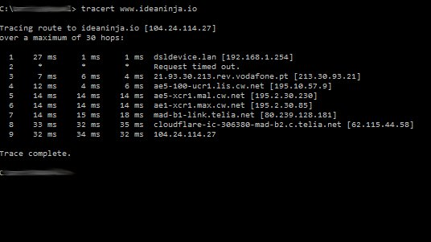
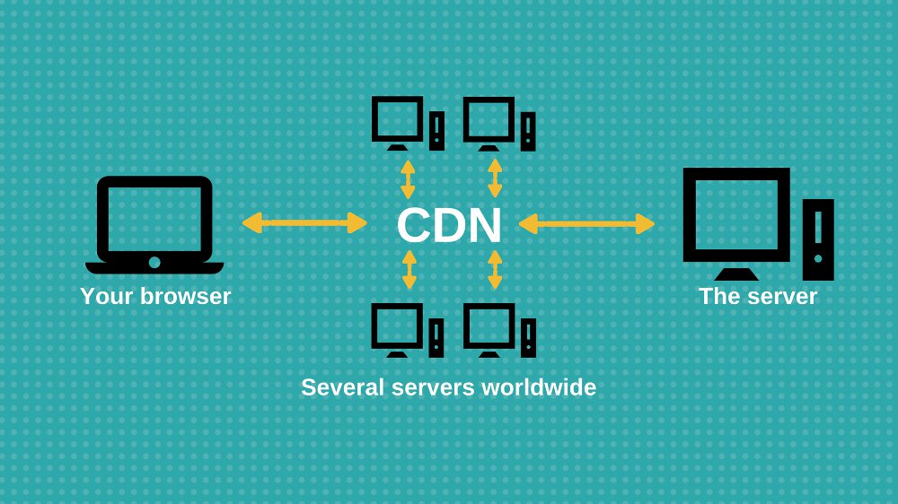

Is your startup spending a lot of money on hosting or is your site sluggish. Learn why using a CDN might be the choice for you.
What is CDN ?
CDN stands for content delivery network and it represents several proxy servers usually deployed all over the world.
The amount of time that goes from the moment your browser makes a request and the moment it receives its first response it’s called latency. Latency occurs due to the distance between your server and your clients.
You can test it by doing a little exercise in your computer: open your command prompt by tipping cmd on windows or terminal if you’re on mac.
Once you opened the terminal console, write “tracert” if you’re on windows or “tracerout” if you have a mac, followed by your website (i.e. www.ideaninja.io). Click enter and you will see how many steps are between your server and your browser (you should see something similar to the picture).
After that, compare to other websites by doing the same thing. The CDN will shorten the distance between the browser and your server and thus reducing latency.
As you will see your request goes through many IP’s before it can even reach the server where the site is hosted. So the latency and speed of a website depends on how many steps are between the browser (i.e. chrome) and server (i.e. ideaninja).
Think of CDN as a mirror for your server. It mimics your server across the world so that when a request is made it will answer with the closest server. Thus avoiding a situation where your request has to go through several jumps across the world to reach its destination. Every time you change something in your server the CDN will update.
Basically it will read your web site and cache its static content so it can present it while bypassing your server. When your website is accessed it will deliver the content without the request reaching your server thus reducing the amount of requests your servers needs to handle. This way a CDN will help you having high availability and higher performance. Moreover, from our experience, it will reduce stress over your server making for saving for about 15% of your hosting needs.
In what conditions a CDN would be useful for my website ?
If your site is having latency problems, low availability or if your startup is spending a lot of money on hosting then you should take a look into it. Several CDN's nowadays include in their services threat blocking services which is always good. However if your startup's website is fast and you have no latency problems, perhaps you would not benefit from a CDN.
Why does my website take so long to load ?
Assuming that your code and the media presented is optimized, let's take a look into what happens when your website is accessed. So the browser requests you page to be presented. That request whops through routers, several pop connections and goes to your internet service provider and then it finds your website's server address and routes the request to it. But it doesn't stop there. Then the request needs to reach your server. Let's say for example that your server is in Uk and you are in the US. Then it needs to jump through several servers across countries to reach yours. And then your servers answers when it has finished answering the several pending requests. If your server is closer to the request you will be faster, reducing the latency.
How can I test my website's speed ?
We use this free service and they don't ask for emails, or payment. It retrieves a nice report so that you can better understand why your website is slow.
How much will a CDN cost me ?
There are several CDNs that are free like (freemium model):
- BootstrapCDN
- CloudFlare
- Coral Content Distribution Network
Probably the most popular nowadays is cloudflare. Other CDN providers, like telcos, charge a fee for this service.
How to setup a Cloudflare for my website ?
Since cloudflare is the most popular one let's explain how to set it up:
- Create a CloudFlare account and add a website;
- Change your domain name servers to CloudFlare;
- Then you can choose your setting on the caching feature or setup redirects or security settings.
Final Remarks
Hopefully this article has helped you improve your knowledge and placed you on the right track to improve your site's performance or saving some money. Idea Ninja is allow thriving to help you. If you liked this article you should read some of our latest articles: